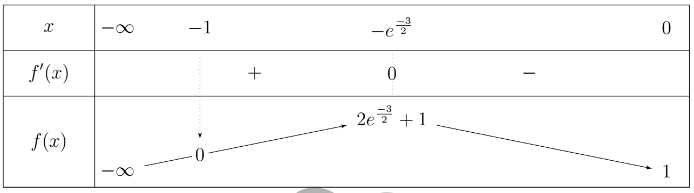
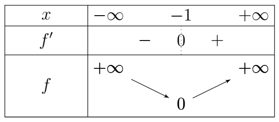
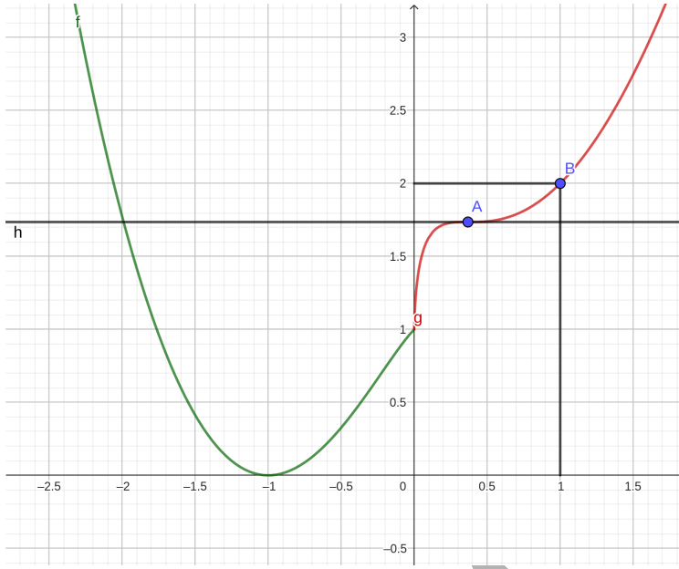
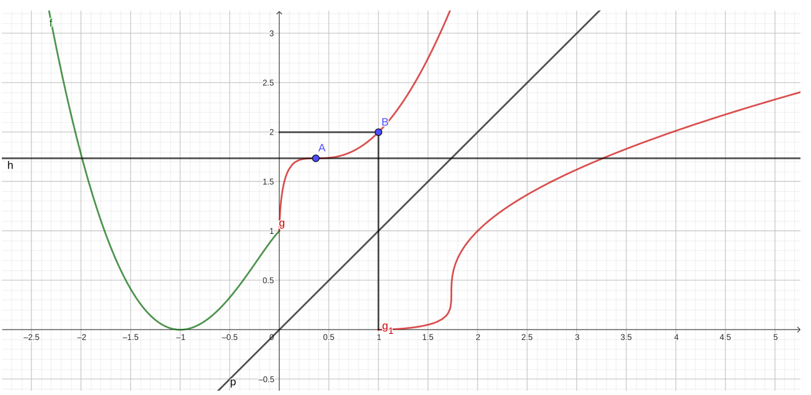

📝 Correction du devoir n°2 du 2nd semestre
A) Réponses aux questions de cours
-
Soit \(z\) un nombre complexe non nul donné.
- L’écriture algébrique de \(z\) est de la forme : \(z=a+ib\), avec \(a\) sa partie réelle et \(b\) sa partie imaginaire.
- L’écriture exponentielle de \(z\) est de la forme : \(z=re^{i\theta}\), avec \(r\) son module et \(\theta\) un de ses arguments.
- L’écriture trigonométrique de \(z\) est de la forme : \(z=r(\cos\theta+i\sin\theta)\), avec \(r\) son module et \(\theta\) un de ses arguments.
-
Soient \(K(z_0)\), \(M(z)\) et \(M'(z')\) et soit \(r\) la rotation de centre \(K(z_0)\) qui transforme \(M(z)\) en \(M'(z')\) on a :
\[ \begin{cases} KM'=KM \\[5pt] (\overrightarrow{KM},\overrightarrow{KM'}) =\theta \quad [2\pi] \end{cases} \tag{1} \]ce qui est équivalent à
\[ \begin{cases} |z'-z_0|=|z-z_0| \\[5pt] \displaystyle \arg\frac{z'-z_0}{z-z_0} \equiv\theta \quad [2\pi] \end{cases} \tag{2} \]D’où
\[ z'=e^{i\theta}z+z_0(1-e^{i\theta}) \]
B) Soit \(z_0=1-i\sqrt{3}\).
-
Écriture trigonométrique de \(z_0\).
On a
\[ |z_0|=\sqrt{1+3}=2 \]soit \(\theta\) un argument de \(z_0\) alors
\[ \cos\theta=\frac{1}{2} \qquad\text{et}\qquad \sin\theta=-\frac{\sqrt{3}}{2} \]ce qui donne
\[ \theta=-\frac{\pi}{3}\ [2\pi] \]d’où
\[ z_0= 2\left( \cos\frac{\pi}{3} -i\sin\frac{\pi}{3} \right) \] -
Calculons \(z_0^4\).
\[ \begin{aligned} z_0^4 &= \left[ 2\left( \cos\frac{\pi}{3} -i\sin\frac{\pi}{3} \right) \right]^4 \\[6pt] &= 16\left( \cos\frac{4\pi}{3} -i\sin\frac{4\pi}{3} \right) \\[6pt] &= 16\left( -\frac{1}{2} +i\frac{\sqrt{3}}{2} \right) \end{aligned} \]D’où
\[ z_0^4=-8+i8\sqrt{3} \] -
Résolvons l’équation
\[ z^4=1 \]\(z^4=1\) implique
\[ |z|^4=1 \qquad\text{et}\qquad 4\arg z=0\ [2\pi] \]ce qui donne
\[ |z|=1 \qquad\text{et}\qquad \arg z=k\frac{\pi}{2}, \quad k\in\mathbb{Z} \]d’où l’ensemble des solutions \(S\) de l’équation \(z^4=1\) est
\[ S=\{-1\,;\,1\,;\,i\,;\,-i\} \] -
Déduisons-en les solutions de l’équation (E) : \(z^4=-8+i8\sqrt{3}\).
\(z^4=-8+i8\sqrt{3}\) est équivalent à
\[ \frac{z^4}{-8+i8\sqrt{3}}=1 \]ce qui est équivalent, d’après B)2), à
\[ \left( \frac{z}{1-i\sqrt{3}} \right)^4=1 \]Ce qui donne d’après B)3) les solutions suivantes :
- Sous forme algébrique :
\[ \begin{aligned} z_0&=1-i\sqrt{3}, & z_1&=-1+i\sqrt{3}, \\[4pt] z_2&=\sqrt{3}+i, & z_3&=-\sqrt{3}-i \end{aligned} \]- Sous forme trigonométrique :
\[ \begin{aligned} z_0 &= 2\left( \cos\frac{\pi}{3} -i\sin\frac{\pi}{3} \right), \\[5pt] z_1 &= 2\left( \cos\frac{2\pi}{3} +i\sin\frac{2\pi}{3} \right), \\[5pt] z_2 &= 2\left( \cos\frac{\pi}{6} +i\sin\frac{\pi}{6} \right), \\[5pt] z_3 &= 2\left( \cos\frac{7\pi}{6} +i\sin\frac{7\pi}{6} \right) \end{aligned} \] -
Plaçons les points.
-
Soit la rotation de centre \(O\) d’angle \(\frac{\pi}{2}\).
D’après A)2), si \(M'(z')\) est l’image de \(M(z)\) par \(r\) alors
\[ z'=ze^{i\frac{\pi}{2}} \] -
Soient les points \(A\), \(B\), \(C\) et \(D\) d’affixes respectives \(z_A=z_0\), \(z_B=z_1\), \(z_C=z_2\) et \(z_D=z_3\).
Vérifions que \(r(A)=C\).
\[ z_Ae^{i\frac{\pi}{2}} = 2e^{-i\frac{\pi}{3}} e^{i\frac{\pi}{2}} = 2e^{i\frac{\pi}{6}} = z_C \]d’où \(r(A)=C\).
Vérifions que \(r(C)=B\).
\[ z_Ce^{i\frac{\pi}{2}} = 2e^{i\frac{\pi}{6}} e^{i\frac{\pi}{2}} = 2e^{i\frac{4\pi}{6}} = 2e^{i\frac{2\pi}{3}} = z_B \]d’où \(r(C)=B\).
Vérifions que \(r(B)=D\).
\[ z_Be^{i\frac{\pi}{2}} = 2e^{i\frac{2\pi}{3}} e^{i\frac{\pi}{2}} = 2e^{i\frac{7\pi}{6}} = z_D \]d’où \(r(B)=D\).
-
\( \begin{aligned} r(A)=C &\implies |z_A|=|z_C|, \\[5pt] r(C)=B &\implies |z_C|=|z_B|, \\[5pt] r(B)=D &\implies |z_B|=|z_D| \end{aligned} \)D’où
\[ |z_A|=|z_C|=|z_B|=|z_D|=2 \]Ce qui est équivalent à
\[ OA=OB=OC=OD=2 \]D’où \(A\), \(B\), \(C\) et \(D\) sont sur le même cercle \((C)\) de centre \(O\) et de rayon \(2\).
Déterminons les limites suivantes :
\( \textbf{1.} \displaystyle \lim_{x \to +\infty} \ln\left[ \frac{x+1}{x^2 + x + 1}\right] \)
\( \textbf{2.} \displaystyle \lim_{x \to +\infty} \frac{\ln(x+2)}{\ln(x+1)} \)
\( \textbf{3.} \displaystyle \lim_{x \to 0^+} \frac{\ln x+2}{\ln x+1} \)
\( \textbf{4.} \displaystyle \lim_{x \to +\infty} \frac{\ln x}{\sqrt{x}} \)
Soit \(g(x)=2x\ln(-x)+x+1\).
-
Déterminons l’ensemble de définition \(D_g\) de \(g\). (0,5 pt)
\(g\) existe ssi \(-x>0\).
\(\displaystyle \begin{aligned}-x>0 &\implies x<0\\ &\implies x\in]-\infty;0[ \end{aligned} \)
Donc \(D_g=]-\infty;0[\).
\[ \mathbf{D_g=]-\infty;0[} \qquad\qquad \textbf{(0,5 pt)} \] -
Calculons les limites aux bornes de \(D_g\). (0,5 pt)
En \(-\infty\)
\(\displaystyle \begin{aligned} \lim_{x\to-\infty}g(x) &= \lim_{x\to-\infty} \left(2x\ln(-x)+x+1\right) \\[5pt] &=-\infty \end{aligned} \)
\(\displaystyle \lim_{x\to-\infty}g(x)=-\infty\).
\[ \mathbf{ \lim_{x\to-\infty}g(x)=-\infty } \qquad\qquad \textbf{(0,25 pt)} \]En \(0^{-}\)
\(\displaystyle \begin{aligned} \lim_{x \to 0^-}g(x) &= \lim_{x \to 0^-} \left(2x\ln(-x)+x+1\right) \\[5pt] &= \lim_{x \to 0^-} \left[-2(-x\ln(-x))+x+1\right] \\[5pt] &=1 \end{aligned} \)
\(\displaystyle \lim_{x\to0^-}g(x)=1\).
\[ \mathbf{ \lim_{x\to0^-}g(x)=1 } \qquad\qquad \textbf{(0,25 pt)} \] -
Étudions les variations de \(g\). (1 pt)
\[ \begin{aligned} g(x) &=2x\ln(-x)+x+1 \\[4pt] &=2(x\ln(-x))'+(x+1)' \\[4pt] &=2\left[(x)'\ln(-x)+x(\ln(-x))'\right]+1 \\[4pt] &=2\left[ \ln(-x)+x\left(\frac{1}{x}\right) \right]+1 \\[4pt] &=2\left[\ln(-x)+1\right]+1 \\[4pt] &=2\ln(-x)+3 \end{aligned} \]\[ \mathbf{ g'(x)=2\ln(-x)+3 } \qquad\qquad \textbf{(0,5 pt)} \]Étudions le signe de \(g'\).
Supposons que \(2\ln(-x)+3>0\).
\[ \begin{aligned} 2\ln(-x)+3>0 &\implies \ln(-x)>-\frac{3}{2} \\[5pt] &\implies \ln(-x)> \ln\left(e^{-\frac{3}{2}}\right) \\[5pt] &\implies -x>e^{-\frac{3}{2}} \\[5pt] &\implies x<-e^{-\frac{3}{2}} \\[5pt] &\implies x\in \left]-\infty;-e^{-\frac{3}{2}}\right[ \end{aligned} \]\[ \begin{cases} \forall x\in \left]-\infty;-e^{-\frac{3}{2}}\right[, \quad g'(x)>0 \quad\text{donc \(g\) y est croissant} \\[8pt] \forall x\in \left]-e^{-\frac{3}{2}};0\right[, \quad g'(x)<0 \quad\text{donc \(g\) y est décroissant} \end{cases} \]
\[ \begin{aligned} g\left(-e^{-\frac{3}{2}}\right) &= 2\left(-e^{-\frac{3}{2}}\right) \ln\left(-\left(-e^{-\frac{3}{2}}\right)\right) -e^{-\frac{3}{2}}+1 \\[5pt] &= -2e^{-\frac{3}{2}} \ln\left(e^{-\frac{3}{2}}\right) -e^{-\frac{3}{2}}+1 \\[5pt] &= -2e^{-\frac{3}{2}} \times\left(-\frac{3}{2}\right) -e^{-\frac{3}{2}}+1 \\[5pt] &= 3e^{-\frac{3}{2}} -e^{-\frac{3}{2}}+1 \\[5pt] &=2e^{-\frac{3}{2}}+1 \end{aligned} \]\[ \mathbf{ g\left(-e^{-\frac{3}{2}}\right) =2e^{-\frac{3}{2}}+1 } \] -
Calculons \(g(-1)\). (0,75 pt)
\[ \begin{aligned} g(-1) &=2(-1)\ln(-(-1))+(-1)+1 \\[5pt] &=-2\ln(1)-1+1 \\[5pt] g(-1) &=-2\times0-1+1 \\[5pt] &=0 \end{aligned} \]\[ \mathbf{g(-1)=0} \]Le signe de \(g(x)\).
D’après le tableau de variation :
\[ \begin{cases} \forall x\in]-\infty;-1[,\quad g(x)<0 \\[8pt] \forall x\in]-1;0[,\quad g(x)>0 \end{cases} \]
On considère la fonction \(f\) définie par :
On note \((C_f)\) sa courbe représentative dans un repère orthonormé.
-
Justifions que \(f\) est définie sur \(\mathbb{R}\). (0,5 pt)
\[ \text{Posons } f(x)= \begin{cases} f_1(x)=x^2\ln(-x)+x+1 & \text{si }x<0\\ f_2(x)=x\ln(x)^2+x+1 & \text{si }x>0\\ f_3(x)=1 & \text{si }x=0 \end{cases} \]*\(f_1\) existe ssi \(-x>0\)
\[ \begin{aligned} -x>0&\implies x<0\\ &\implies x\in]-\infty;0[ \end{aligned} \]\(Df_1=]-\infty;0[\)
*\(f_2\) existe ssi \(x>0\)
\[ \begin{aligned} x>0&\implies x\in]-\infty;0[ \end{aligned} \]\(Df_2=\in]-\infty;0[\)
\(Df_3=\{0\}\)
Donc
\[ \begin{aligned} Df&=Df_1\cup Df_2\cup Df_3\\ &=]-\infty;0[\cup]-\infty;0[\cup\{0\}\\ &=\mathbb{R} \end{aligned} \]\[ \mathbf{Df=\mathbb{R}} \] -
Étudions la continuité et la dérivabilité de \(f\) en 0. (1,5 pt)
Continuité
En \(0^-\), on a : \(f(x)=x^2\ln(-x)+x+1\).
\[\displaystyle \begin{aligned} \lim_{x \to 0^-}x^2\ln(-x)+x+1: \begin{cases} \lim\limits_{x \to 0^-}x^2\ln(-x)=0\\[3mm] \lim\limits_{x \to 0^-}x+1=1 \end{cases} \text{ Par somme}: \lim\limits_{x \to 0^-}x^2\ln(-x)+x+1=1 \end{aligned} \]Ainsi,
\[ \mathbf{\lim_{x\to0^-}f(x)=1} \]En \(0^+\), on a : \(f(x)=x\ln(x)^2+x+1\).
\[ \begin{aligned} \lim\limits_{x \to 0^+}x\ln(x)^2+x+1: \begin{cases} \lim\limits_{x \to 0^+}(x^{\frac12}\ln(x))^2=0\\[4mm] \lim\limits_{x \to 0^+}x+1=1 \end{cases} \text{ Par somme : } \lim\limits_{x \to 0^+}f(x)=1 \end{aligned} \]Ainsi,
\[ \mathbf{\lim_{x\to0^+}f(x)=1} \]Conclusion
On sait que \(f(0)=1\). De plus :
\[ \mathbf{ \lim_{x\to0^-}f(x) = \lim_{x\to0^+}f(x) = f(0) = 1 } \]Par conséquent, la fonction \(f\) est continue en \(x=0\).
Dérivabilité
En \(0^-\), on a : \(f(x)=x^2\ln(-x)+x+1\).
\[ \begin{aligned} \lim_{x\to0^-}\frac{f(x)-f(0)}{x-0} &= \lim_{x\to0^-} \frac{x^2\ln(-x)+x+1-1}{x} \\ &= \lim_{x\to0^-} \frac{x^2\ln(-x)+x}{x} \\ &= \lim_{x\to0^-} x\ln(-x)+1 \\ &=1 \end{aligned} \]\[ \mathbf{ \lim_{x\to0^-} \frac{f(x)-f(0)}{x-0} = 1 } \]En \(0^+\), on a : \(f(x)=x\ln(x)^2+x+1\).
\[ \begin{aligned} \lim_{x\to0^+}\frac{f(x)-f(0)}{x-0} &= \lim_{x\to0^+} \frac{x\ln(x)^2+x+1-1}{x} \\ &= \lim_{x\to0^+} \frac{x\ln(x)^2+x}{x} \\ &= \lim_{x\to0^+} \ln(x)^2+1 \\ &=+\infty \end{aligned} \]\[ \mathbf{ \lim_{x\to0^+} \frac{f(x)-f(0)}{x-0} = +\infty } \]\[ \mathbf{ \lim_{x\to0^-}\frac{f(x)-f(0)}{x-0} \neq \lim_{x\to0^+}\frac{f(x)-f(0)}{x-0} } \]Par conséquent, la fonction \(f\) n'est pas dérivable en \(x=0\).
Interprétons graphiquement les résultats :
- \(f\) est dérivable à gauche de \(0\) et admet une tangente d'équation \(y=x+1\).
- \(f\) n'est pas dérivable à droite de \(0\) et admet une demi-tangente orientée vers le haut.
-
Donnons le domaine de dérivabilité de \(f\), puis montrons que \( f'(x)= \begin{cases} g(x) & \text{si }x<0\\[3mm] (1+\ln x)^2 & \text{si }x>0 \end{cases} \) (0,5×3 pts)
Domaine de dérivabilité
\(\displaystyle f_1(x)=x^2\ln(-x)+x+1\) est dérivable si \(x<0\), ainsi \(Df_1'=]-\infty;0[\).
\(f_2(x)=x\ln(x)^2+x+1\) est dérivable si \(x>0\), ainsi \(Df_2'=]0;+\infty[\).
D'après ce qui précède, \(f\) n'est pas dérivable en \(0\), donc \(f\) est bien dérivable sur \(\mathbb{R}\setminus\{0\}\).
Ainsi :
\[\displaystyle \begin{aligned} Df' &=Df_1'\cup Df_2'\cup Df_3\\ &=]-\infty;0[\cup]0;+\infty[\\ &=\mathbb{R}\setminus\{0\} \end{aligned} \]\[ \mathbf{Df'=\mathbb{R}\setminus\{0\}} \]\[\displaystyle \begin{aligned} f'(x) &= \begin{cases} [x^2\ln(-x)+x+1]' & \text{si }x<0\\[3mm] [x\ln(x)^2+x+1]' & \text{si }x>0 \end{cases} \\ &= \begin{cases} (x^2\ln(-x))'+(x+1)' & \text{si }x<0\\[3mm] (x\ln(x)^2)'+(x+1)' & \text{si }x>0 \end{cases} \\ &= \begin{cases} 2x\ln(-x)+x^2\times\frac{1}{x}+1 & \text{si }x<0\\[3mm] \ln(x)^2+2x\times\frac{1}{x}\times\ln(x)+1 & \text{si }x>0 \end{cases} \\ &= \begin{cases} 2x\ln(-x)+x+1 & \text{si }x<0\\[3mm] \ln(x)^2+2\ln(x)+1 & \text{si }x>0 \end{cases} \\ &= \begin{cases} g(x) & \text{si }x<0\\[3mm] (\ln(x)+1)^2 & \text{si }x>0 \end{cases} \textbf{ cqfd} \end{aligned} \] -
Calculons les limites de \(f\) aux bornes de son domaine de définition. (0,5 pt)
En \(-\infty\), on a : \(f(x)=x^2\ln(-x)+x+1\)
\[\displaystyle \begin{aligned} \lim_{x\to-\infty}f(x) &=\lim_{x\to-\infty}x^2\ln(-x)+x+1 \\ &=\lim_{x\to-\infty} x^2 \left[ \ln(-x)+\frac{x+1}{x} \right] \\ &=+\infty\left[+\infty+1\right] \\ &=+\infty \end{aligned} \]\[ \mathbf{\lim_{x\to-\infty}f(x)=+\infty} \]En \(+\infty\), on a : \(f(x)=x\ln(x)^2+x+1\).
\[\displaystyle \begin{aligned} \lim_{x\to+\infty}f(x) &=\lim_{x\to+\infty}x\ln(x)^2+x+1 \\ &=+\infty \end{aligned} \]\[ \mathbf{\lim_{x\to+\infty}f(x)=+\infty} \] -
Étudions les branches infinies de \((C_f)\). (0,5 pt)
Comme \(\lim\limits_{x\to-\infty}f(x)=+\infty\), calculons \(\lim\limits_{x\to-\infty}\dfrac{f(x)}{x}\).
En effet :
\[ \begin{aligned} \lim\limits_{x\to-\infty}\frac{f(x)}{x} &=\lim\limits_{x\to-\infty} \frac{x^2\ln(-x)+x+1}{x} \\ &= \lim\limits_{x\to-\infty} x\ln(-x)+\frac{x+1}{x} \\ &=-\infty+1 \\ &=-\infty \end{aligned} \]Donc \(\displaystyle \lim\limits_{x\to-\infty}\frac{f(x)}{x}=-\infty\).
Donc \(Cf\) admet une branche parabolique de direction \((Oy)\) au voisinage de \(-\infty\).
Comme \(\lim\limits_{x\to+\infty}f(x)=+\infty\), calculons \(\lim\limits_{x\to+\infty}\dfrac{f(x)}{x}\).
En effet :
\[ \begin{aligned} \lim\limits_{x\to+\infty}\frac{f(x)}{x} &= \lim\limits_{x\to+\infty} \frac{x\ln(x)^2+x+1}{x} \\ &= \lim\limits_{x\to+\infty} \ln(x)^2+\frac{x+1}{x} \\ &=+\infty+1 \\ &=+\infty \end{aligned} \]Donc \(\displaystyle \lim\limits_{x\to+\infty}\frac{f(x)}{x}=+\infty\).
Donc \((Cf)\) admet une branche parabolique de direction \((Oy)\) au voisinage de \(+\infty\).
-
Dressons le tableau de variations de \(f\). (1 pt)
Le signe de \(f'\). On a :
\[ f'(x)= \begin{cases} g(x) & \text{si }x<0\\[3mm] (1+\ln x)^2 & \text{si }x>0 \end{cases} \]\[ \begin{cases} \forall x\in\left]-\infty;-1\right[,g(x)<0 \text{ donc \(f\) est y décroissante} \\[3mm] \forall x\in\left]-1;0\right[,g(x)>0 \text{ donc \(f\) y est croissante} \\[3mm] \forall x\in\left]0;-\infty\right[,f(x)>0 \end{cases} \]
-
Montrons que dans \(]-\infty;-1[\), l'équation \(f(x)=1\) admet une unique solution \(\alpha\). (0,75 pt)
Posons \(h(x)=f(x)-1\).
Montrer que \(f(x)=1\) admet une unique solution revient à montrer que \(h(x)=0\) admet une unique solution.
Existence
\[ \begin{aligned} \lim\limits_{x\to-\infty}h(x)\times\lim\limits_{x\to-1}h(x) &= \lim\limits_{x\to-\infty}f(x)-1 \times \lim\limits_{x\to-1}f(x)-1 \\ &= +\infty\times(-1) \\ &<0 \end{aligned} \]Donc l'équation \(h(x)=0\) admet une solution \(\alpha\).
Unicité
Comme \(h\) hérite des propriétés de \(f\), donc \(h\) est continue et strictement décroissante sur \(]-\infty;-1[\).
D'où l'unicité de la solution.
Vérifions que \(-1,8<\alpha<-1,7\).
\[ \begin{aligned} h(-1,8)\times h(-1,7) &= (f(-1,8)-1)\times(f(-1,7)-1) \\ &= (1.104428794-1)\times(0.833515646-1) \\ &= (0.104428794)\times(-0.166484354) \\ &<0 \end{aligned} \]Donc \(\alpha\in]-1,8;-1,7[\).
-
Construisons \((C_f)\) (unité 2 cm) (on précisera la tangente au point d'abscisse \(e^{-1}\) et on placera le point d'abscisse 1). (0,75 pt)
\(f(x)=x\ln(x)^2+x+1\)
\(f(e^{-1})=2e^{-1}+1\)
Équation de la tangente
L'équation de la tangente en \(x=e^{-1}\) est donnée par :
\[ y=f(e^{-1})+f'(e^{-1})(x-e^{-1}) \]Puisque \(f'(e^{-1})=0\), on a :
\[ y=\frac{2}{e}+1 \]La tangente est une droite horizontale d'équation :
\[ y=\frac{2}{e}+1 \]\[ f(1)=2 \]
-
Montrons que \(h\) admet une bijection réciproque \(h^{-1}\) définie sur un intervalle \(J\) que nous allons préciser. (0,5 pt)
La fonction \(h\) est continue et strictement croissante sur \(I=]0,+\infty[\) et réalise une bijection de \(I\) sur \(J=]1,+\infty[\).
Elle admet donc une bijection réciproque \(h^{-1}:J\rightarrow I\).
-
Étudions la dérivabilité de \(h^{-1}\) sur \(J\). (0,25 pt)
D'après le théorème de dérivation des fonctions réciproques, si \(h\) est dérivable et si \(h'(x)\neq0\) pour tout \(x\in I\), alors \(h^{-1}\) est dérivable sur \(J\) et sa dérivée est donnée par :
\[ \big(h^{-1}\big)'(y)= \frac{1}{h'(h^{-1}(y))}, \quad \forall y\in J. \]Or, nous avons montré que : \(h'(x)=(\ln(x)+1)^2\).
Puisque \((\ln(x)+1)^2>0\) pour tout \(x>0\), on en déduit que \(h'(x)\neq0\) sur \(I\).
Ainsi, \(h^{-1}\) est dérivable sur \(J=]1,+\infty[\).
-
-
Calculons \(h(1)\). (0,25 point)
\(h(x)=x\ln(x)^2+x+1.\)
\[ \begin{aligned} h(1)&=1\ln(1)^2+1+1.\\ &=1\cdot0+1+1=2.\\ &=2. \end{aligned} \] -
Calculons \((h^{-1})'(2)\). (0,5 pt)
Nous savons que la dérivée de la fonction réciproque \(h^{-1}\) est donnée par :
\[ (h^{-1})'(y)= \frac{1}{h'(h^{-1}(y))}, \quad \forall y\in J. \]Nous avons précédemment trouvé que :
\[ h(1)=2. \]Cela signifie que :
\[ h^{-1}(2)=1. \]Calculons maintenant \(h'(1)\). La fonction \(h\) est définie par :
\[ h(x)=x\ln(x)^2+x+1. \]Sa dérivée est :
\[ h'(x)=(\ln(x)+1)^2. \]En évaluant cette dérivée en \(x=1\), on a :
\[ h'(1)=(\ln(1)+1)^2=(0+1)^2=1. \]Ainsi : \((h^{-1})'(2)=\frac{1}{h'(1)}=\frac{1}{1}=1.\)
Conclusion
Nous obtenons : \((h^{-1})'(2)=1.\)
-
-
Construisons la courbe de \(h^{-1}\). (0,5 pt)

Courbe de (Cf) -
Étudions la continuité et la dérivabilité de \(f\) en 0. Interprétez graphiquement les résultats. (1,5 pt)